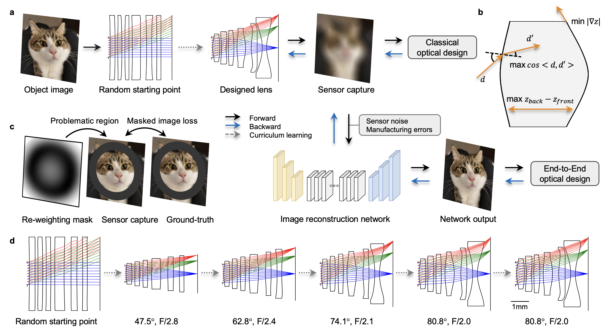

DeepLens: an open-source differentiable ray tracer for computational lens design.

Curriculum learning for automated lens design.
Abstract
Deep optical optimization has recently emerged as a new paradigm for designing computational imaging systems using only the output image as the objective. However, it has been limited to either simple optical systems consisting of a single element such as a diffractive optical element or metalens, or the fine-tuning of compound lenses from good initial designs. Here we present a DeepLens design method based on curriculum learning, which is able to learn optical designs of compound lenses ab initio from randomly initialized surfaces without human intervention, therefore overcoming the need for a good initial design. We demonstrate the effectiveness of our approach by fully automatically designing both classical imaging lenses and a large field-of-view extended depth-of-field computational lens in a cellphone-style form factor, with highly aspheric surfaces and a short back focal length.